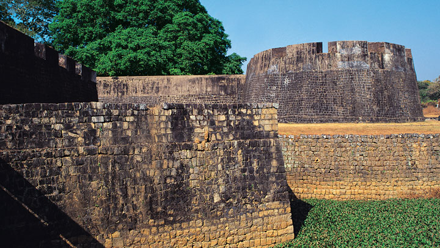
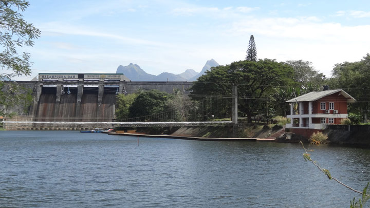
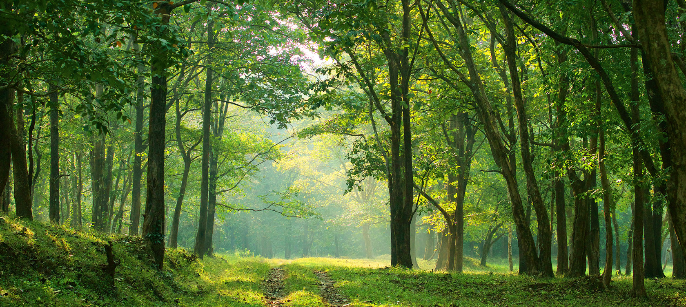
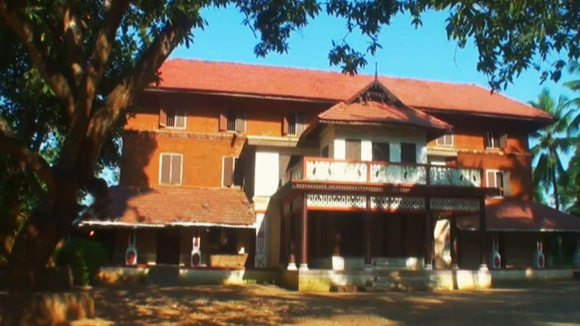

Top 5 places to visit in Palakkad
Tipu's Fort
Tipu's Fort, also known as (Palakkad Fort, is a beautifully maintained edifice in Palakkad which was an important military base in the past. Rebuilt by Hyder Ali in the 18th century, it was under the Mysore rulers until the British took control of the place. It would then be used for providing government services during this era.Named after Hyder's son Tipu Sultan, it is an important historical destination today.
It is among the best preserved forts in South India. The thick laterite walls impress all who view it. People frequent the spot for relaxing walks and jogs. A large ground that lies between the Fort and the Palakkad town hall is an important location for public meetings and important functions. Today it is a protected monument under the Archaeological Survey of India. It is a preferred picnic spot for everyone visiting Palakkad.

Malampuzha Dam
Malampuzha Gardens, the only rock-cut gardens in South India made by Nek Chand, the renowned artist and winner of the prestigious Padmashree Award, is situated in Palakkad district. The entire garden is made from broken pieces of bangles, tiles, used plastic cans, tins and other waste materials. Also situated in the gardens is the massive Malampuzha Yakshi(female vampire) built in 1969 by Kanayi Kunhiraman, a greatly respected sculptor from the state. It is a spectacular relic of art that we are lucky to still have with us. The flowering beds, fountains and rose gardens along with an aerial ropeway make it a place that instantly soothes your soul.
In the lower hills of the Western Ghats lies the beautiful Malampuzha township whose lush greenery and plethora of picnic spots make it a must visit spot in these areas. It has really good trekking trails that are available to all with a penchant for the same. Malampuzha Gardens and the Irrigation Dam tend to be the areas that attract the highest number of visitors. Apart from being perfect picnic spots, there is a host of interesting trivia surrounding the place that adds to its appeal.

Nelliyampathi
From the town of Nenmara in Palakkad district, the cloud-caressed peaks of the majestic Nelliyampathy Hill ranges are a sight to behold. The height of the hills ranges from approximately 467 m to 1572 m and it has an extremely calming effect on all who view it. To reach Nelliyampathy, one has to take the road starting from Nenmara that proceeds to the Pothundy Dam. There are about 10 hairpin bends that have to be negotiated on the way to Nelliyampathy.
The Pothundy Dam is a beautiful locale with facilities for boating and is a nice option as a picnic place. As the Ghat road winds its way up to Nelliyampathy, at certain places there are viewpoints from where the vast stretches of Palakkad district are visible with its extensive paddy fields forming a verdant carpet. It also offers a splendid view of the Palakkad Gap, which is a geographical phenomenon in the Western Ghats formation in this region, bringing into view, parts of the adjoining State of Tamil Nadu.
On the way up, those interested in bio farming can take a close look at the privately managed farms and also vast expanses of tea estates managed by different plantation companies. The hills of Nelliyampathy are also well known for its orange cultivation.
Privately owned hotels and resorts are located at various points, as one goes up the hills of Nelliyampathy. The bio-farms located here are a major landmark as one proceeds up before reaching the topmost point at Palagapandi Estate. The estate has a quaint bungalow, built during the British rule in India, and has now been converted into a private owned resort. At Kaikatty, a community hall is available, which is usually used as a base by those interested in trekking.
Not far away from Palagapandy is Seetharkundu where one can have a fantastic view of the valley and a 100 m high waterfall providing an added attraction. From Palagapandy, one can trek or go by jeep to reach Mampara; another breathtaking vantage point at Nelliyampathy. The area in and around Palagapandy Estate has tea, cardamom and coffee plantations with adjoining hills allowing one to catch a glimpse of the wildlife in the form of Indian Gaur, elephants, leopards, Giant Squirrel etc. and is also a paradise for birdwatchers.

Parambikulam Tiger Reserve
Parambikulam Tiger Reserve is situated in Chittur taluk of Palakkad district and is about 100 km away from Palakkad. The challenging hill ranges here are placed at an altitude of 300 to 1438 m above sea level and the place offers a good climate with temperatures ranging from 15 degree Celsius to 32 degree Celsius. Sprawling over an area of 285 sq km, Parambikulam can boast of the first scientifically managed teak plantations of the world and also houses the world's tallest and oldest teak tree.

Varikkasseri Mana
Located 35 km from Palakkad district of Kerala, Ottappalam is a famous town known for its numerous places of worship and their colourful festivals. It is also home to the famous Varikkasseri Mana, where Malayalam films are shot almost round the year. The colourful Chinakkathoor Pooram is held annually at the Sree Chinakkathoor Bhagavathy Temple in Palappuram near Ottapalam.
